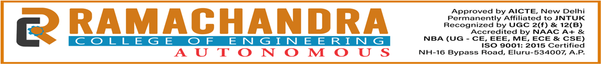

Department of Computer Science & Engineering
Community Service Project (CSP)
Assessment of Drinking Water Availability and Infrastructure Facilities
Village: JalipudiTeam Members
K. Satya Sai Anuradha24ME1A0588
K. Sudheer24ME1A0589
B. Ishwarya25ME5A0507
Mentor
Mr. Y. Nagendra Kumar
Associate Professor
Academic Year: 2025–2026